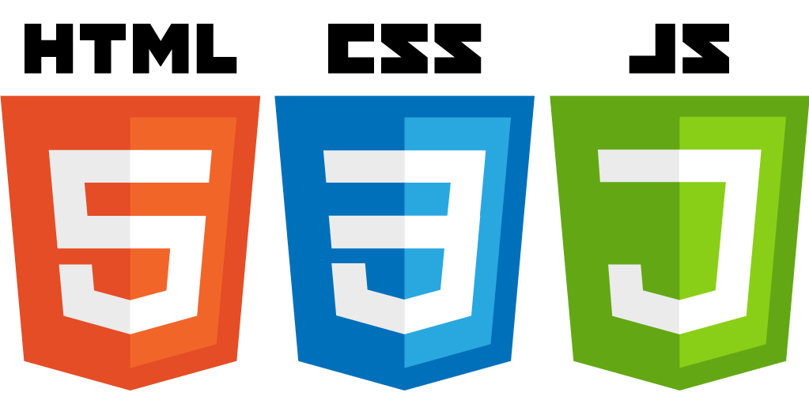
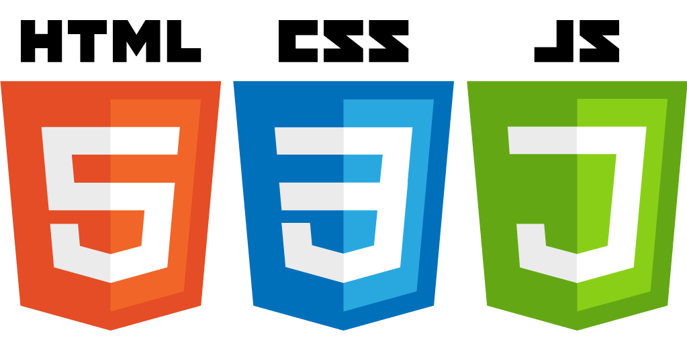
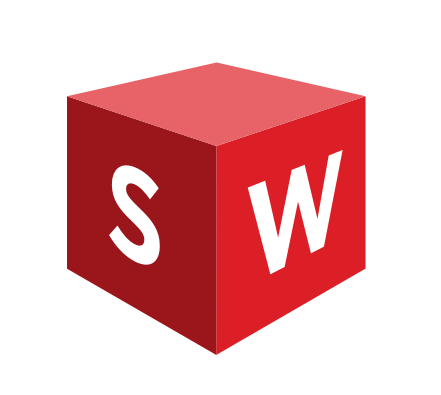
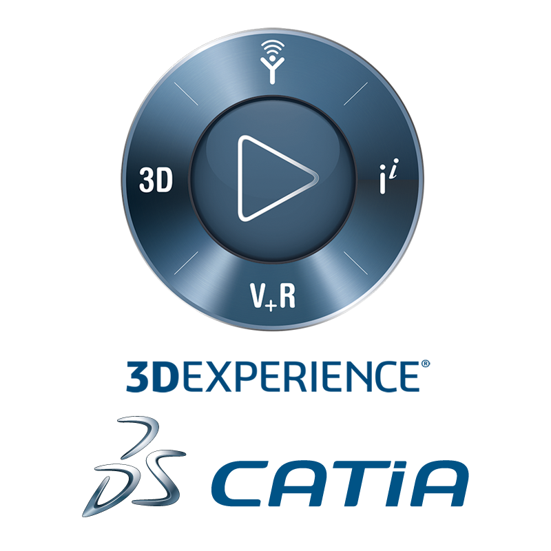

Neo Lou.
Undergraduate Student in the Engineering Science program at the University of Toronto
About me
I am Neo Lou, an engineering student in the Engineering Science program at the University of Toronto. I enjoy learning about all kinds of emerging technologies and applying them in real-life projects. In my free time, I like to play music instruments, play a variety of sports, and learn new languages! To learn more about me, please take a look at my past projects and my resume!
My Technical Skills
Coding (Python, C, MATLAB, HTML, CSS, Javascript)

 

Computer-Aided Design (Solidworks, CATIA)
 Engineering Simulation Software (NX, Ansys)

My Co-curricular Activities
Blue Sky Solar Racing (BSSR)
Founded in 1995, the University of Toronto Blue Sky Solar Racing team is a student-led design-build team that has designed, built and raced solar powered vehicles for over 25 years. The team of over 50 diverse, talented students is divided into multiple subteams, and the ones that I am part of are the structural and the fabrication subteams, where we design the structural parts of the car and physically fabricate it in the workshop.
UTAT Space Systems
The University of Toronto Aerospace Team (UTAT) is an award winning design team that brings passionate undergraduates and graduates together to work on technically challenging projects in aerospace. The Space Systems division is dedicated to open-source and accessible space exploration. More precisely, our team engages in the design, development, and launching of small satellites—specifically CubeSats (as seen in the picture). This division is also divided in subteams, and the structural subteam is the one I joined, where we do industry research on the structural parts of a satellite to design them and then analyze their behaviours under launch and space environments.
UTSU Board of Directors
Founded in 1901, the University of Toronto Students’ Union (UTSU) is the official student government for more than 38,000 students at the University of Toronto. As a student government and independent not-for-profit organization, we operate autonomously from the University of Toronto administration and strive to be a democratic, accessible, equitable organization. I was elected this year as an Engineering Director on the UTSU Board of Directors, where the most important decisions are made. My role is to represent my consituents on the Board, but also to work in various committees offering different services to the students.
My Interests
Music performance
Proficient in:
Have been part of many music ensembles, such as:
Sports
Amateur Athlete:
Languages
Fluent in:
Conversational in:
My Projects
My Resume
Contact Me
Toronto, CANADA
+1 (438) 488-4959
neolou2000@hotmail.com
Let's get in touch!
Send me a message: